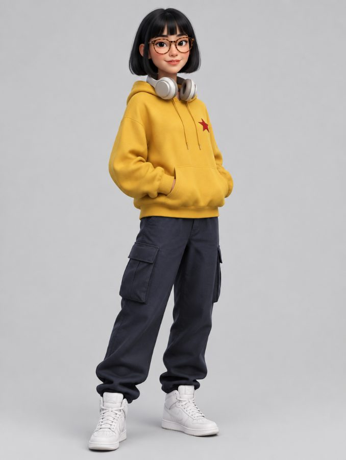
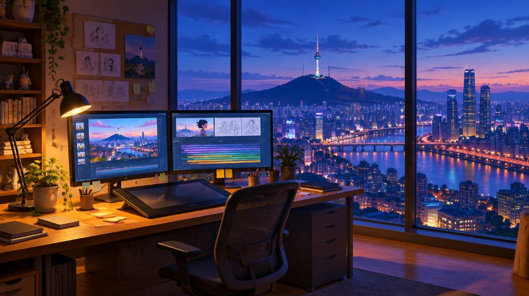

요약 — 오디오는 ‘마스터 클락’보다 ‘강한 힌트’에 가깝다
로딩 중…
한눈에 비교 — 같은 프롬프트, 드롭만 4초 앞당겼을 때
왼쪽은 드롭이 8초, 오른쪽은 드롭이 4초인 오디오를 넣었습니다. 그 외 프롬프트·이미지·설정은 완전히 같습니다. “둘 다 동시 재생”을 누르고 타임라인의 빨간 점선(입력 드롭)과 청록 실선(야경 리빌)의 간격을 비교해 보세요. 프리셋 버튼으로 다른 대조 쌍(텍스트 vs 오디오, 2.0 vs 2.5, 대사 문법 등)도 바로 비교할 수 있습니다.
무엇을 검증했나
원 리포트는 Reddit 글의 주장을 “공식 확인 / 커뮤니티 테크닉 / 공식 확인 안 됨”으로 분류했습니다. 공식 문서가 말해주지 않는 부분 — 실제로 얼마나, 어떤 조건에서 작동하는가 — 를 측정 가능한 가설로 바꿨습니다.
| # | 원 주장 | 측정 가능한 가설 | 실험 |
|---|---|---|---|
| H1 | 오디오가 영상의 시간 구조(빌드→드롭)를 결정한다 (“Audio as master clock”) | 입력 오디오의 드롭을 8s→4s로 옮기면 영상의 클라이맥스도 같은 만큼 앞당겨진다 | E1-R8 vs E1-R4 |
| H2 | “음악에 맞춰줘”가 아니라 역할을 명시해야 한다 | 역할 매핑 템플릿이 단순 지시보다 드롭에 더 가깝게 클라이맥스를 배치한다 | E1-R8 vs E1-N |
| H3 | 오디오가 텍스트보다 타이밍 통제에 유리하다 | 오디오 드롭 정렬 오차 < “정확히 8초에” 텍스트 지시 오차 | E1-R8·N vs E1-TT |
| H4 | 비트/다운비트 → 컷·카메라 전환 | 시각 이벤트(컷·모션 온셋)가 0.5s 비트 그리드에 위상 고정된다 (Rayleigh) | E1, E2 전체 |
| H5 | @Video1과 @Audio1이 둘 다 시간을 통제하면 충돌한다. 역할을 분리하면 해결된다 | 오디오 추가 시 돌리인 추종이 떨어지고, 역할 분리 문구가 이를 회복시킨다 | E2-V vs U vs S |
| H6 | [AUDIO: Xs] 문법·대사 오디오로 SFX·대사·립싱크 타이밍을 맞출 수 있다 | 노크 1.0s·대사 4.0s 목표 대비 오차, 대본 일치율, 립싱크 오프셋 | E3-B vs N vs A |
| H7 | (추가) Seedance 2.5에서도 같은가 | 동일 프롬프트·레퍼런스로 2.5를 복제해 위 지표를 비교 | 전체 × 2 모델 |
실험 설계 — 정답을 아는 입력으로 측정 가능하게
실제 곡(예: Suno)은 드롭·비트 위치를 정확히 알기 어렵습니다. 그래서 120 BPM(비트 간격 0.5초)의 합성 EDM 트랙을 직접 프로그래밍해 모든 이벤트 시각을 샘플 단위로 기록했습니다. 두 트랙은 빌드+드롭 구간이 샘플 단위로 동일하고 위치만 4.0초 차이가 나도록 만들었습니다 — 드롭 위치만 바꾸는 깨끗한 조작입니다.
2.1 공통 입력 (모든 조건에서 고정)
@Image1 — 캐릭터

gpt_image_2_5 생성 · 머스타드 후디, 붉은 별 패치, 뿔테 안경, 헤드폰 — 식별성 높은 디자인
@Image2 — 환경

서울 야경(남산타워·한강)이 보이는 스튜디오. ‘야경 리빌’ 지표의 근거
@Video1 — 카메라 레퍼런스 (실험 2)
무음 · 컷 0 · 12초 등속 돌리인(줌인 프레임 100%, 속도 변동계수 0.13). 다른 공간(박물관 복도)이라 ‘환경 누출’도 확인 가능
@Audio1 · A_drop8
인트로 0–6s → 빌드 6–8s(가속 스네어롤+라이저, 마지막 0.25s 공백) → DROP 8.0s → 피크
@Audio1 · A_drop4
같은 빌드+드롭을 4초 앞으로: 인트로 0–2s → 빌드 2–4s → DROP 4.0s → 피크
@Audio1 · A_dialogue (실험 3)
합성 노크 1.00s·1.20s + TTS(Seed Audio) “설마 이걸 진짜 먹으라고?” 발화 시작 4.00s
2.2 조건 매트릭스
모든 조건은 같은 장면 문단(“책상에서 몰두 → 점점 고조 → 클라이맥스에 가장 극적인 카메라 무브로 서울 야경 리빌”)을 공유하고, 오디오 유무·지시 방식만 바꿨습니다. 프롬프트는 생성 전에 고정했습니다(원문은 각 행에서 펼쳐 볼 수 있음).
seedance_2_0, mode std · 2.5: seedance_2_5, mode omni_reference · 공통: 720p, 16:9, 실험1·2 12초 / 실험3 8초, generate_audio=true, 시드 지정 불가(→ 조건당 3회 반복으로 확률적 변동을 측정). 오디오 레퍼런스는 320kbps MP3로 업로드.2.3 측정 파이프라인
드롭을 옮기면 클라이맥스도 옮겨진다 — 하지만 정확히는 아니다
넣은 오디오가 그대로 나오지 않는다 — 모델은 음악을 ‘다시 작곡’한다
“비트마다 컷”은 관찰되지 않았다
비디오 레퍼런스와 오디오 레퍼런스의 충돌
대사·노크 타이밍과 립싱크
Seedance 2.0 vs 2.5
부록 발견 — 프레임 카덴스 아티팩트
분석 플레이어 — 영상과 측정값을 프레임 단위로 같이 보기
아무 그래프의 점·막대·곡선을 클릭해도 이곳으로 열립니다. 타임라인은 위에서부터 프레임 스트립 → 출력 사운드트랙 스펙트로그램 → 입력 오디오 엔벨로프 → 출력 오디오 RMS → 모션 강도 → 야경 노출이며, 빨간 점선(입력 드롭)·초록 잔점선(출력 사운드트랙의 드롭)·청록 실선(야경 리빌)·앰버 실선(모션 히트)·회색 가는 선(하드 컷)이 겹쳐 그려집니다. 재생 중 이벤트를 지날 때 영상 테두리가 해당 색으로 깜박입니다. 0.25× 슬로모션과 이벤트 구간 반복으로 싱크를 직접 확인해 보세요.